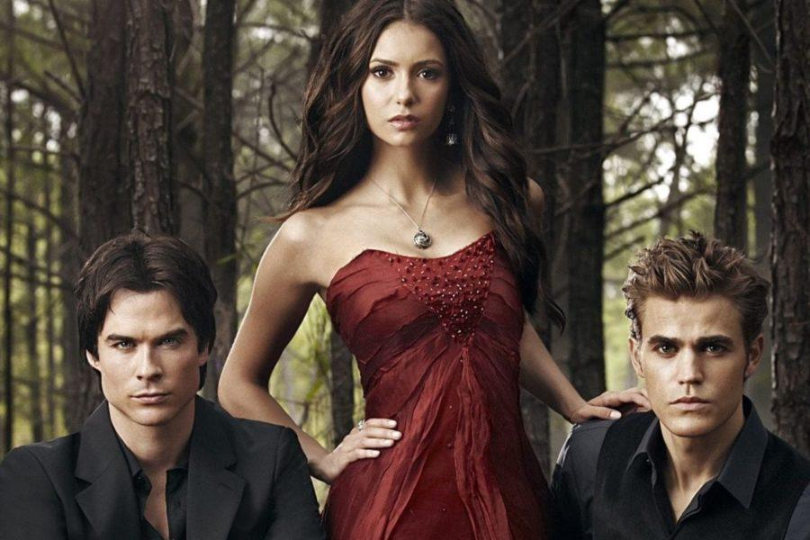

La primera temporada comienza después del terrible accidente que mató a los padres de Elena Gilbert, una adolescente de 17 años que vive en Mystic Falls, una ciudad de Virginia, y que intenta seguir adelante con su vida, sin imaginarse que conocerá a un nuevo, guapo y misterioso estudiante, llamado Stefan Salvatore, quien esconde un secreto que muy pronto será descubierto con la llegada de su hermano Damon Salvatore. Elena y los habitantes de Mystic Falls se ven envueltos entre seres sobrenaturales: Vampiros, Brujas, Hombre lobo, Híbridos, entre otros. La primera temporada comienza después del terrible accidente que mató a los padres de Elena Gilbert, una adolescente de 17 años que vive en Mystic Falls, una ciudad de Virginia, y que intenta seguir adelante con su vida, sin imaginarse que conocerá a un nuevo, guapo y misterioso estudiante, llamado Stefan Salvatore, quien esconde un secreto que muy pronto será descubierto con la llegada de su hermano Damon Salvatore. Elena y los habitantes de Mystic Falls se ven envueltos entre seres sobrenaturales: Vampiros, Brujas, Hombre lobo, Híbridos, entre otros. La primera temporada comienza después del terrible accidente que mató a los padres de Elena Gilbert, una adolescente de 17 años que vive en Mystic Falls, una ciudad de Virginia, y que intenta seguir adelante con su vida, sin imaginarse que conocerá a un nuevo, guapo y misterioso estudiante, llamado Stefan Salvatore, quien esconde un secreto que muy pronto será descubierto con la llegada de su hermano Damon Salvatore. Elena y los habitantes de Mystic Falls se ven envueltos entre seres sobrenaturales: Vampiros, Brujas, Hombre lobo, Híbridos, entre otros.
HARALD FAIRHAIR
La segunda temporada se centra principalmente en la llegada de la réplica de Elena, Katherine Pierce, y las razones de por qué regresó a Mystic Falls (para encontrar la piedra lunar y romper la maldición de los hombres lobo que sólo se pueden transformar en luna llena sin su voluntad). También se introducen los hombres lobo. El tío de Tyler, Mason Lockwood, un hombre lobo, llega a la ciudad después de la muerte de su hermano, y le habla a Tyler sobre la llamada «maldición Lockwood» que tiene su familia desde hace siglos. También hay nuevos vampiros, como Caroline, quien es convertida por Katherine (ya que ella tenía la sangre de Damon en su sistema y Katherine la asesina). Se revela que Elena no es la única réplica Petrova. Elena tiene que ser sacrificada para romper la maldición de Klaus, quien es el mayor vampiro de la historia, y que ahora está tras ella. La segunda temporada se centra principalmente en la llegada de la réplica de Elena, Katherine Pierce, y las razones de por qué regresó a Mystic Falls (para encontrar la piedra lunar y romper la maldición de los hombres lobo que sólo se pueden transformar en luna llena sin su voluntad). También se introducen los hombres lobo. El tío de Tyler, Mason Lockwood, un hombre lobo, llega a la ciudad después de la muerte de su hermano, y le habla a Tyler sobre la llamada «maldición Lockwood» que tiene su familia desde hace siglos. También hay nuevos vampiros, como Caroline, quien es convertida por Katherine (ya que ella tenía la sangre de Damon en su sistema y Katherine la asesina). Se revela que Elena no es la única réplica Petrova. Elena tiene que ser sacrificada para romper la maldición de Klaus, quien es el mayor vampiro de la historia, y que ahora está tras ella.